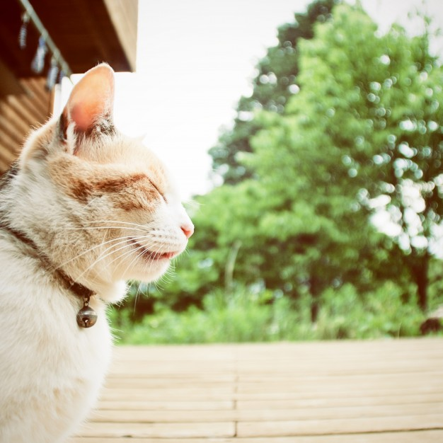

|
Planejando a área do jardim, as brincadeiras dos animais de estimação juntamente com toda a familia em um belo final de semana, serão mais concentradas e facilitam a limpeza, a manutenção e a preservação de suas lindas plantas.
Observe algumas dicas valiosíssimas para organizar o seu jardim, para Pets e Plantas.
– As plantas sempre devem estar em nichos ou setores, onde se possa facilmente isolar a área usando cercas, biombos ou telas de proteção tipo mosquiteiro que também possam ser removidas...
Área do jardim concentrada para distração dos Pets, Programe isso também!
Se você destinar uma área atrativa para eles, tenha certeza que será lá, que eles irão ficar a maior parte do tempo!
Nesta área, você poderá planejar de forma com que os companheiros de estimação possam se divertir e mesmo quando em uma eventual destruição…
Utilize plantas e tipos de grama que se recuperem rapidamente preenchendo novamente o local.
Ter um canto somente com terra solta sem plantas ou gramas ajudará muito na diversão dos animais de estimação e também quando necessitar de limpeza, já que estarão em um local organizado e planejado destinado a eles.
Os Pets aprendem rápido se tiverem estímulos!
Com algumas noções de Paisagismo e
Práticas de adestramento para cães,
Você também pode criar muito mais formas para manter controle e harmonia entre seu jardim suas plantas e seus Pets.
Quanto aos Gatos, aqueles cuidados básicos em manter as unhas aparadas corretamente.
Aos roedores, Pets de estimação, pense também em soluções para não perdê-los entre locais não planejados no jardim. |
